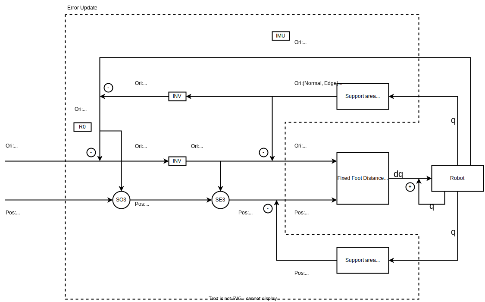

Control Flow¶
{kind=link}
There are 3 coordinates
Body, coordinate on robot body(origin point)
Support, coordinate by the connection of end effectors
Horizon, coordinate defined by direction of gravity
When we try to control the body movement, instead control body, we control the Support rigid.
The Support rigid is defined by the connection of end effector.
We convert our target(no matter what which coordinate in which coordinate) to target of Support rigid on Boday coordinate. And the current Support rigid on Body coordinate is very easy calculated by forward kinematics. The error could be achieved to pass to nullspace controller.
Control Variables¶
The control is based on simple formula
$$dq = J^{-1}e$$
It has two parts, the Jacobian and error which has been demonstrated in chapter below.
Error Update¶
The error is described by orientation and position of Support virtual coordinate relative to Base.
In this chapter we are talking about the coordination fixed on virtual rigid object relative to base.
We need:
A origin point
two axis direction(third one could be derived by cross production operation)
The origin point is the centroid point of all end effectors.
We define the normal/Z vector by finding the best fitting plane.
Then we need find a vector inside the best-fitting-plane. Actually, it doesn’t really matter how you define this vector since the difference between current status and target status is all we need.
But we people tend to like the axis that match/align with robot mechanical structuer. Here we use left bound in eagle view as Y axis
Fixed Foot Distance Nullspace Controller(Jacobian)¶
This is prioritized tasks controller and it has 3 tasks from higher to lower order:
Keep foot distance unchanged
Approach to Orientation target(described by Support on Body)
Approach to Position target(described by Support on Body)
Of course, since this is a nullspace controller, the second task will be achieved in the nullspace of first task. The third task will be achived in the nullspaces of first and second.
We need calculate the Jacobian matrix of each task.
Notice in second task, we use the normal/Z axis from best fitting plane which is derived from SVD. So, the derivative of this nomral/Z axis require a calculation of dU from SVD. Here we use autodiff of SVD.